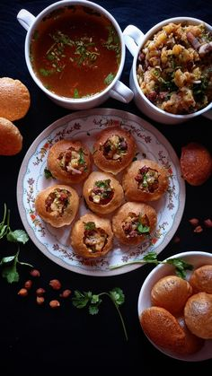

How to Make Your Favourite Indian Snack?
Choose which one you wanna make below:
Samosa (Delhi/ Uttar Pradesh) -

Vada Pav (Maharashtra) -
-
Dhokla (Gujarat) -
Dhokla (Gujarat) - This steamed savory cake made from fermented rice and chickpea batter is a popular snack from Gujarat. It’s light, fluffy, and often garnished with mustard seeds and coriander.
-
Puchka/Panipuri (West Bengal) -

Puchka (Pani Puri/Golgappa) - This is a Bengali twist on the popular street food, where crisp, hollow puris are filled with a tangy tamarind water, spicy potato filling, and sometimes chickpeas. It’s a favorite snack in Kolkata and other Bengali regions.
-
Chole Bhature (Punjab) -
While often served as a meal, this combination of spicy chickpea curry (chole) with deep-fried bread (bhature) is also enjoyed as a hearty snack, particularly in Punjab.
Each of these snacks highlights the rich culinary traditions and regional flavors of its respective state.